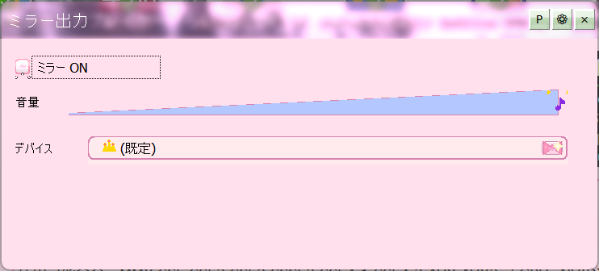

出力ミラーは、いま鳴っている音をもう一台の再生デバイスへ同時に送る機能です。「部屋のスピーカーとヘッドホンの両方から出したい」「別のオーディオ機器でも確認したい」というときに使います。

ミラー表示
ミラー側で別に変えられるのは音量だけです。イコライザーやエフェクトは、もとの出力と同じものが送られます。「片方だけEQを変える」ということはできません。
Mirror CUE の切り替えと、独立した音量が用意されています。DJのモニター（キュー）のような使い方で、片方で確認しながら、もう片方で流し続けられます。
音がずれて聞こえる（ぼわっと二重になる）ときは、2つのデバイスの遅れの差が原因です。レンダリング設定 でバッファを調整すると近づけられます。同時に耳で聴くのではなく、片方をモニター用と割り切るのも手です。
選んだ出力デバイスが ボイスチェンジャー で使われているときは、「選択出力はメディアプレイヤーのミラー出力で使用中です」といった競合のお知らせが出ます。どちらかのデバイスを変えてください。